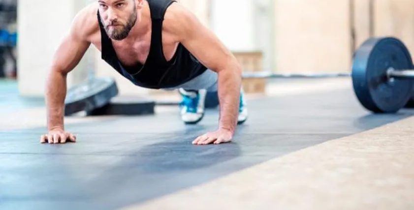
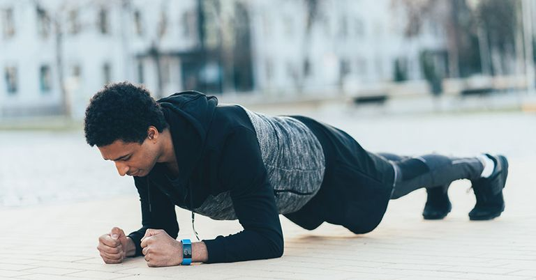
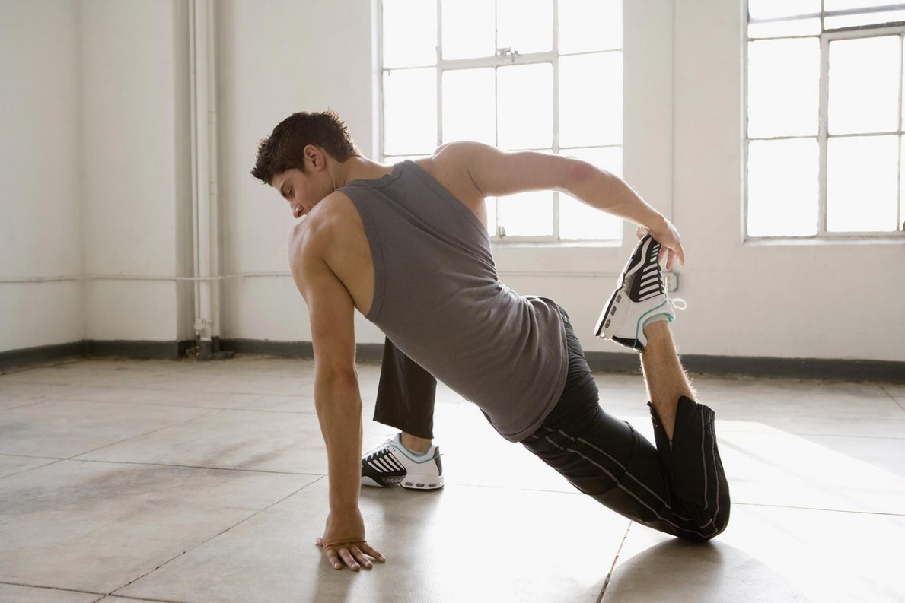
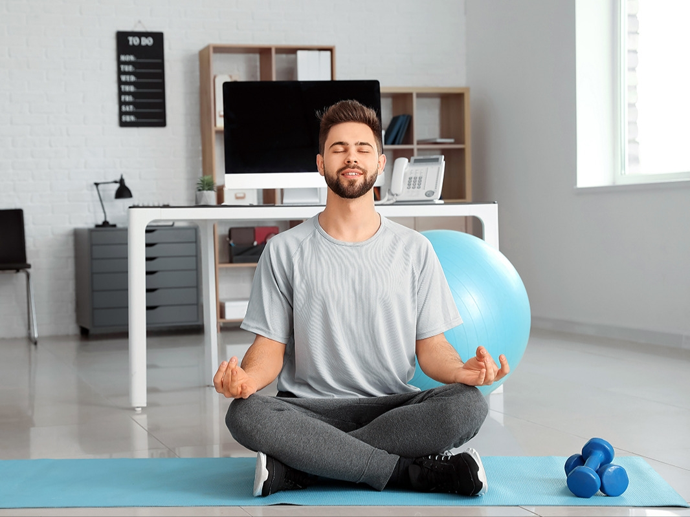
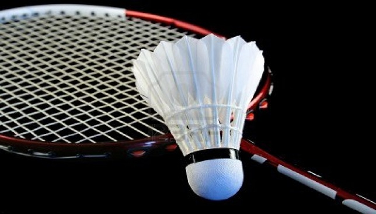
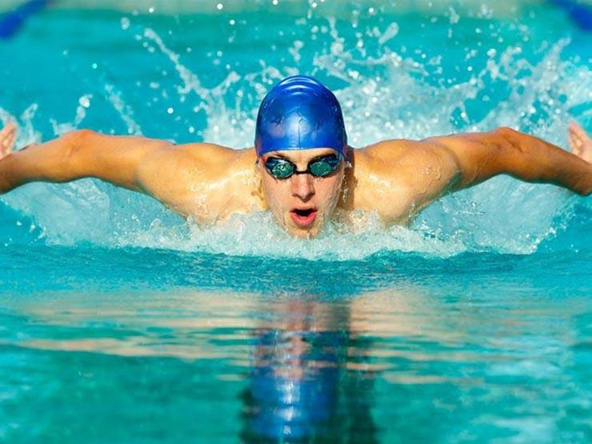

اختار النشاط الرياضي الذي يناسبك لتبدأ في تحسين لياقتك البدنية وزيادة نشاطك اليومي.

تمارين الكارديو تساعدك في تحسين اللياقة القلبية والتمتع بصحة أفضل. من أمثلتها: الجري، السباحة، وركوب الدراجة.

تمارين القوة تساعد على بناء العضلات وزيادة القوة. تشمل رفع الأثقال وتمارين الضغط وغيرها من التمارين المركزة.

تمارين المرونة تساعد في تحسين المرونة والوقاية من الإصابات. من أمثلتها: اليوغا، التمدد، وتمارين الإحماء.

اليوغا ليست مجرد تمارين بدنية، بل هي أيضًا توازن بين الجسد والعقل. تعلم تقنيات التنفس والتحكم في التوتر.

تحسن اللياقة البدنية، حيث تبين أنها تعمل على تعزيز آلية ضخ الدم في الجسم بشكل كبير وتساعد كذلك على حرق الدهون بحوالي 450 سعراً حرارياً في الساعة.

تعزيز صحة القلب - تحسين قدرة الرئتين - التخفيف من آلام الظهر - زيادة الكتلة العضلية وتقويتها